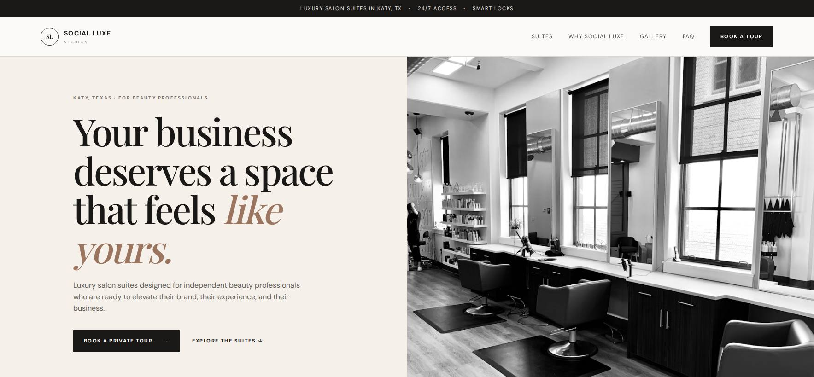

08 · CREATIVE / SERVICES
Social Luxe Studios — turning a creative service into a clear digital proposition.
A service-business concept built to communicate capability, personality and a direct path to enquiry.

THE APPROACH
Make the offer easy to buy.
The experience puts services, positioning, proof and contact routes into a simple hierarchy designed for visitors who may be discovering the studio for the first time.
WHAT WE BUILT- Service-led homepage
- Clear proposition hierarchy
- Creative visual direction
- Enquiry-focused navigation
HTML / CSSJavaScriptService UX
Portfolio project. No engagement, lead or revenue results are presented as verified data.